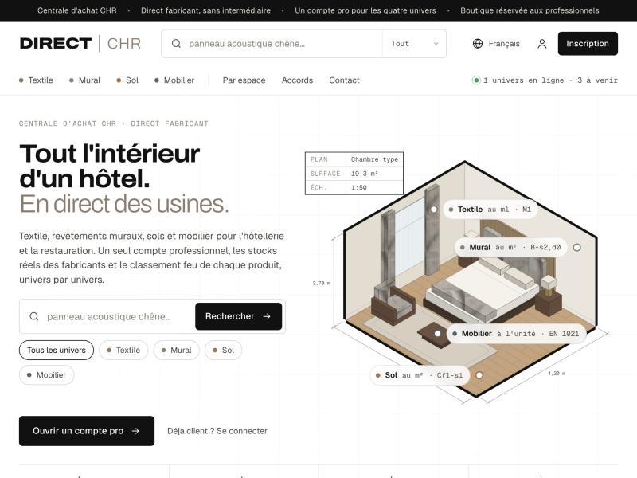
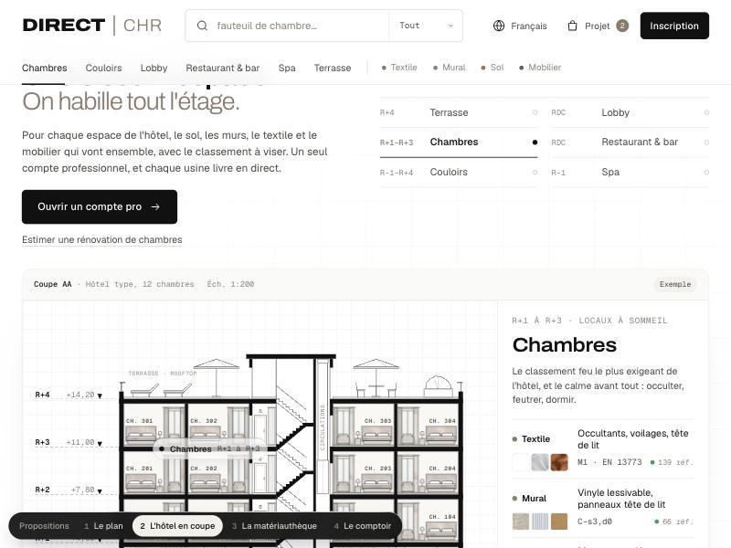
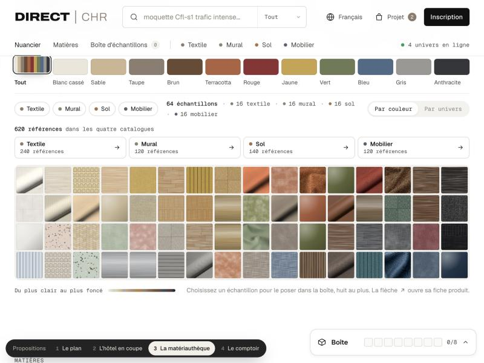
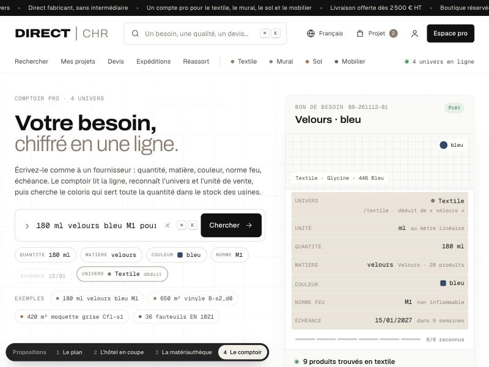

Site chapeau · /textile · /mural · /sol · /mobilier
Quatre façons d'entrer dans le site. Le même design, le même compte pro.
Les quatre propositions partagent le même design, le compte unique et les quatre univers. Ce qui change, c'est la porte d'entrée : par univers, par espace de l'hôtel, par matière ou par besoin chiffré. Elles se combinent : on peut garder l'accueil de l'une et une section d'une autre.
Tout est navigable depuis chacune. On peut parcourir les catalogues textile, mural, sol et mobilier, avec environ 20 articles par catégorie, ouvrir les fiches produit, remplir un projet et une boîte d'échantillons.

Le plan
On entre par l'universUne chambre d'hôtel en axonométrie : le sol, les murs, le textile et le mobilier sont quatre couches qui s'allument une à une.
- Idée forte
- La chambre en couches et les accords de matières
- Pour qui
- L'architecte d'intérieur, l'acheteur qui sait quel univers il cherche
- Il faut
- Un catalogue par univers, rien de plus

L'hôtel en coupe
On entre par l'espaceUn hôtel dessiné en coupe, du spa à la terrasse. On choisit un étage ou un espace, et la page dit ce qu'il faut dans chaque univers.
- Idée forte
- Le métré express : nombre de chambres, et les quantités sortent par univers
- Pour qui
- L'hôtelier ou le conducteur de travaux qui rénove un étage
- Il faut
- Une sélection de produits par espace

La matériauthèque
On entre par la matière et la couleurUn mur d'échantillons des quatre univers rangé par couleur, comme dans un showroom, avec un nuancier pour filtrer.
- Idée forte
- La boîte d'échantillons, à remplir dans les quatre univers
- Pour qui
- Le décorateur, le designer, le bureau d'études
- Il faut
- Des photos et des couleurs pour chaque univers, et l'envoi d'échantillons

Le comptoir
On entre par le besoin chiffréUn outil d'achat : on écrit « 180 ml velours bleu M1 pour le 15/01 », et la page en tire un bon de besoin. Le stock est affiché en direct.
- Idée forte
- Le besoin en une ligne, puis l'espace pro : projets, devis, expéditions, réassort
- Pour qui
- L'acheteur ou l'économe d'un groupe hôtelier
- Il faut
- Des stocks fiables et un espace client plus riche
La barre en bas à gauche permet de passer d'une proposition à l'autre.